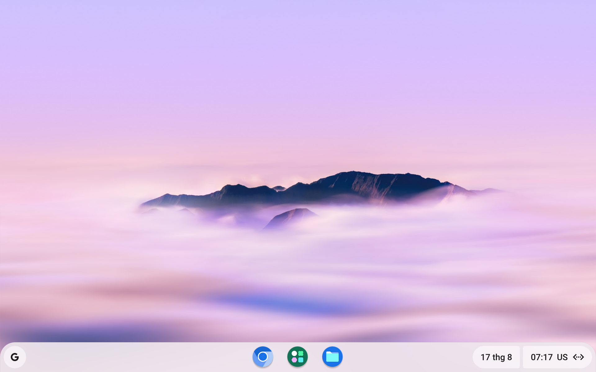
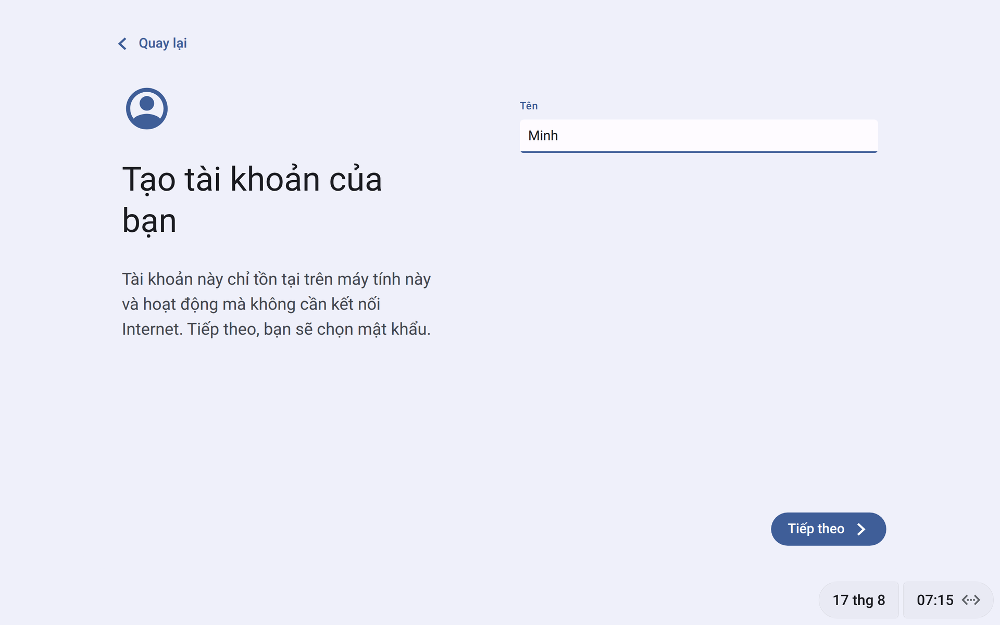
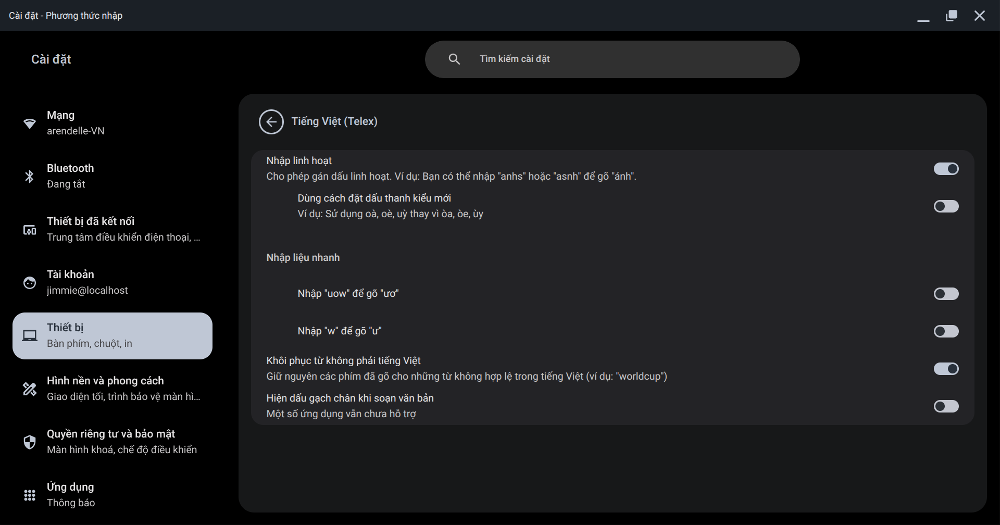
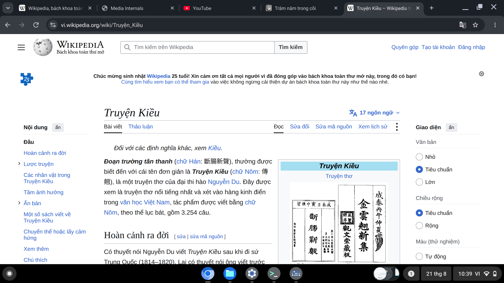
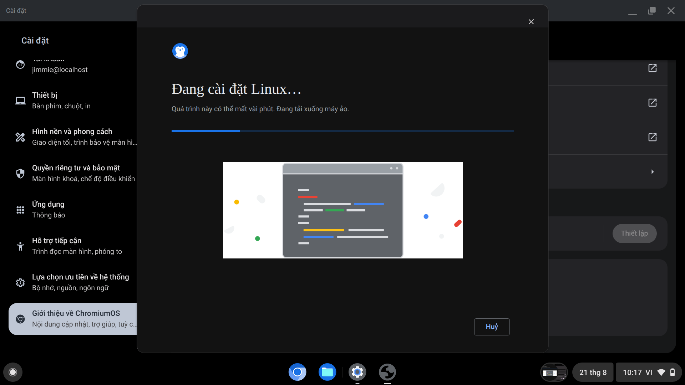
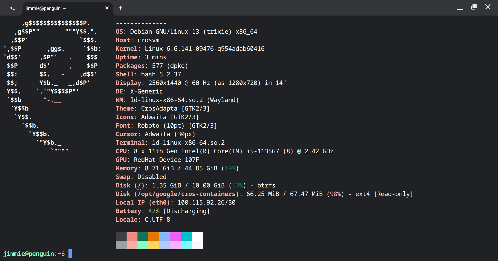
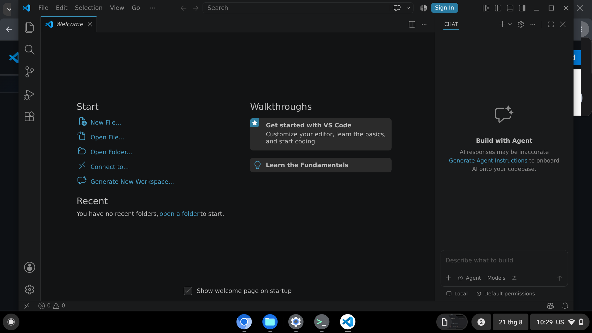
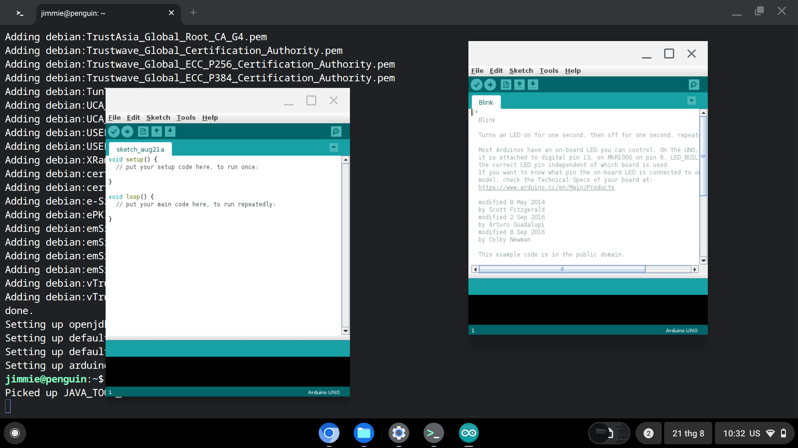

Hình ảnh
Ảnh chụp từ hệ thống đang chạy, không dàn dựng. Đẹp đến đâu thì máy bạn cũng sẽ đúng đến đó.








Ảnh chụp từ hệ thống đang chạy, không dàn dựng. Đẹp đến đâu thì máy bạn cũng sẽ đúng đến đó.







